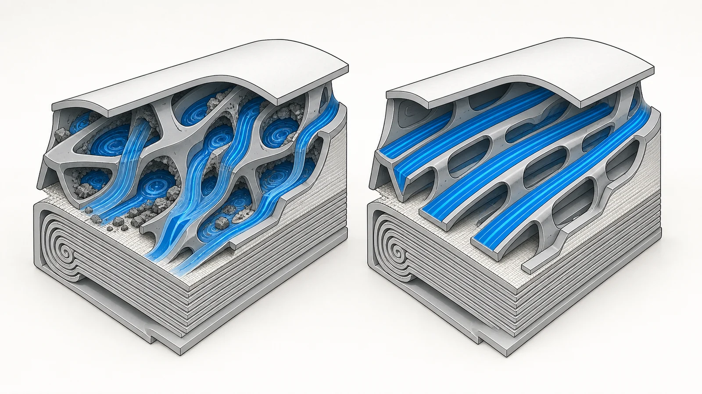
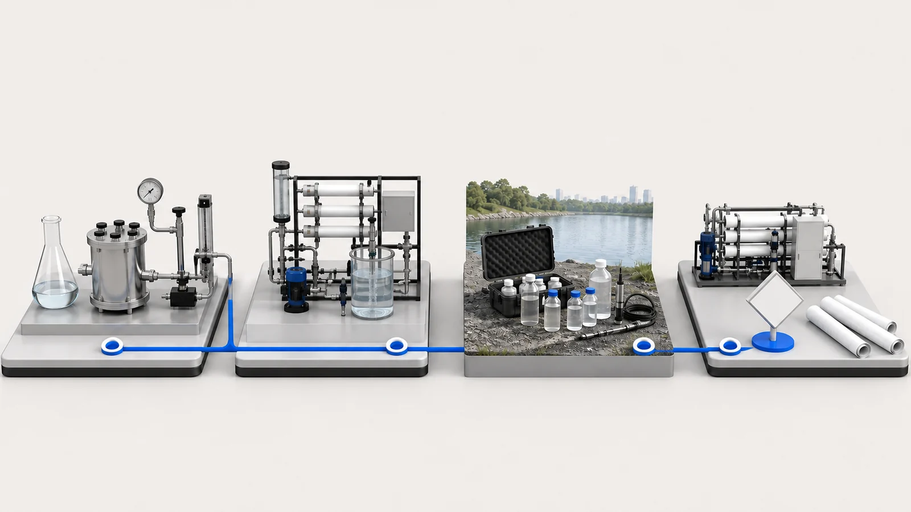
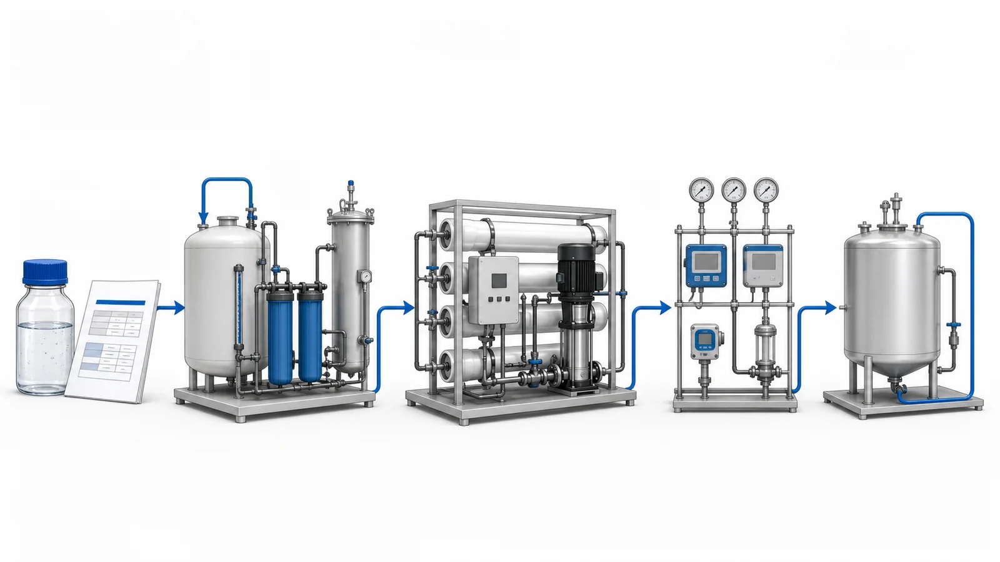

Direct answer
Vontron PURO-ULD is an antifouling reverse-osmosis membrane element introduced for water streams with biological and organic fouling tendencies. Its engineering focus is not a universal promise that fouling disappears. The practical value is a lower-resistance feed-channel direction intended to limit pressure-difference growth and support cleaning recovery under challenging conditions. A useful project decision still begins with the water or process-fluid report, pretreatment risks, production target and operating envelope. Yuchen Water can support membrane sourcing and the related equipment review, but it does not finalize a material or system result from the product name alone.
Why antifouling RO projects are hydraulic problems as well as chemistry problems
Industrial wastewater rarely behaves like a stable salt solution. Petrochemical, steel, coal-chemical, food-processing and mixed factory streams can carry changing combinations of salts, hardness, silica, particles, oils, surfactants, organics and biological activity. Production and cleaning events can change the feed within the same day, affecting both the membrane surface and the narrow feed channels inside an RO element.
When deposits, biomass or organics restrict those channels, hydraulic resistance rises. Operators may see growing feed-to-concentrate pressure difference, higher required feed pressure, uneven flow or more frequent cleaning. Pressure difference is a useful signal, but it does not identify the foulant by itself. Read it with normalized permeate flow, salt passage, temperature, conductivity, stage pressures and cleaning records.
Antifouling does not mean maintenance-free or replace pretreatment. It describes design choices intended to reduce certain fouling effects within a defined operating range. The system must still control oil, suspended solids, scale-forming ions, oxidants and biological risk.

What is new in the PURO-ULD design direction
Vontron developed the PURO family for difficult reuse and process-water duties. Earlier generations combined cleaning tolerance, feed-spacer changes and flow-distribution work. PURO-ULD continues that direction with an ultra-low-pressure-difference feed-channel concept for streams with biological and organic fouling tendencies.
A more uniform flow path can reduce recirculation and stagnant regions where material accumulates. It may also limit local concentration polarization near the membrane surface. This explains why feed-spacer geometry can influence pressure-difference growth and cleanability even though membrane chemistry is only one part of the train.
Channel design must still be reviewed with the pressure vessel, element loading and cleaning system. It cannot correct a poor manifold, excessive feed flow, inadequate flushing or an out-of-limit feed. PURO-ULD is therefore one component in a report-driven review, not a cure for an unidentified problem.
How to read the published PURO-ULD data
The following values are transcribed from Vontron's published PURO-ULD technical release. They describe stated element data under stated test conditions; they are not a site-performance forecast.
| Effective membrane area | 400 ft² |
|---|---|
| Feed-spacer designation | ULD |
| Permeate flow | 10,500 gpd (39.7 m³/d) |
| Salt rejection | 99.6% |
| Published ΔP2 value | 0.10 bar |
Published standard-test conditions:
- Feed pressure: 225 psi (15.5 bar)
- Feed solution: 2,000 mg/L NaCl
- Temperature: 25°C
- pH: 7 ± 0.5
- Single-element recovery: 15%
- Published single-element permeate-flow tolerance: ±20%
- Published ΔP2 condition at average feed flow: 11 m³/h
Standard NaCl testing is useful for product characterization and comparison. Real industrial wastewater contains a different mixture of ions, organics, particles and microorganisms, often with changing temperature and pH. The listed permeate flow, rejection and pressure-difference value therefore cannot be copied directly into a plant production guarantee.
What the reported pressure-difference comparison does and does not prove
Vontron officially reports that, under its stated fouling-and-cleaning comparison, PURO-ULD's interstage pressure difference was up to 50% lower than PURO-I. The comparison used an average feed flow of 9 m³/h and three fouling-and-cleaning cycles. Vontron also reports that the pressure difference remained relatively low across those cycles and recovered well after cleaning under the comparison conditions.
The words ‘up to’ and ‘under the stated comparison conditions’ are essential. The result is manufacturer-reported test evidence, not an independent field guarantee. It does not establish that every site will use 50% less energy, clean 50% less often or obtain a particular service life. Field behavior depends on feed composition, pretreatment stability, array design, recovery, temperature, cleaning trigger, chemical program and operator control. For a complex or valuable stream, a pilot or staged validation may still be appropriate.
Evidence boundary: manufacturer-reported comparison at 9 m³/h over three fouling-and-cleaning cycles; not a universal site result.

How PURO-ULD can be reviewed with Yuchen Water equipment support
A productive equipment discussion connects the membrane to the conditions that determine whether its flow channel can stay usable. Yuchen Water reviews the following system layers together:
1. Characterize and stabilize the feed
Identify the wastewater source, normal and peak chemistry, cleaning events, equalization performance and blending. A single grab sample may be inadequate when the process varies by shift or batch.
2. Match pretreatment to measured risks
Oil removal, clarification, media filtration, UF, biological control, activated carbon, softening, dosing and cartridge filtration are possible tools, not a universal checklist. An unmanaged carbon bed can create biological or particle risks, and every chemical contacting RO requires compatibility review.
3. Configure the RO hydraulic envelope
Confirm vessel arrangement, element count, staging, flows, pump curve, recovery, concentrate chemistry and minimum crossflow. Monitor feed, interstage and concentrate pressure together with permeate flow, conductivity and temperature so normalized trends remain visible.
4. Plan flushing, CIP and operational response
Define shutdown flushing, cleaning triggers, chemical and temperature limits, circulation flow and soak sequence. Cleaning should follow verified trends and probable foulant type; waiting for severe blockage can reduce hydraulic recovery.

Why 500, 1,000, 2,000 or 3,000 LPH is only the starting point
A request for 500, 1,000, 2,000 or 3,000 LPH describes desired permeate flow, not the final array. Temperature, recovery, design flux, operating hours, peak demand, cleaning allowance, redundancy and target water quality also matter. A 1,000 LPH system running eight hours has a different storage duty from one running continuously.
In larger systems, staging and vessel loading become more important because the first-stage feed and final-stage concentrate see different conditions. Yuchen Water can discuss pretreatment, membrane materials, vessels, pumps, controls, CIP and commissioning support after reviewing the report and production target together.
What to send before a technical recommendation
Provide representative data from the actual RO feed or clearly identify where the sample was taken. If only partial data is available, Yuchen Water can give preliminary screening questions, not a final material or performance commitment.
- Stream origin, production schedule and known cleaning discharges
- Normal and peak flow, requested permeate LPH and daily runtime
- Conductivity, TDS, pH and temperature ranges
- COD, TOC, oil, surfactants, color and relevant organics
- Turbidity, TSS, SDI where meaningful, and particle or colloid information
- Microbiological indicators and biocide history
- Hardness, alkalinity, silica, iron, manganese, metals and major ions
- Free chlorine, chloramine, other oxidants, solvents and process chemicals
- Existing pretreatment, filter history, membrane data and cleaning records
- Target permeate quality, recovery objective, concentrate limits and available footprint
Common specification mistakes
- Selecting PURO-ULD from COD or TDS alone without identifying the actual fouling mechanism
- Treating a lower-pressure-difference design as permission to increase recovery or feed flow without calculation
- Using the published NaCl permeate flow as the guaranteed output of an industrial wastewater plant
- Interpreting the reported up-to-50% comparison as a universal energy, cleaning or service-life saving
- Ignoring oxidant exposure, cleaning chemicals, shutdowns, feed shocks or concentrate-side scaling
Supply and engineering-support boundary
Yuchen Water supports Vontron membrane sourcing and related housings, filtration, pumps, controls and industrial equipment technical support. The team can review reports, identify missing data and match an equipment-support direction to the duty. Yuchen Water is not the manufacturer of Vontron membranes.
Technical review does not replace project engineering, pilot validation or required regulatory assessment. Before report review, Yuchen Water does not promise membrane suitability, flux, recovery, rejection, energy use, cleaning interval, service life or project outcome. Current official documentation and the confirmed operating envelope govern the final recommendation.
Official product reference
For the manufacturer's current industrial membrane categories and documentation, consult Vontron's official product center. Product availability and the final technical direction should be confirmed for the actual project.
Vontron official product center including PURO Series categories →Continue the technical review
Use these pages to move from the technical question to evidence, equipment scope and a report-based review.